| Version / date | 1.2 — protocol revision, 15 October 2026 (supersedes the 15 October v1.1 draft; analysis plan unchanged) |
| Pre-registration lock | 13 October 2026, 16:11 UTC (21:41 IST), before any study data were downloaded |
| Combined SHA-256 | ebd71ed91f63a6df414139f0d3a2db458e13b1da54cc64f42ca7d92bbe7e0a95 |
| Evaluation period | 1 March 2025 – 28 February 2026; four seasonal folds; development month January 2026 |
| Study domain | 6–37°N, 68–98°E; cruise segments at or above FL250 (≈ 376 hPa) |
| Data sources | ECMWF ERA5 · EUMETSAT Meteosat-9 IODC SEVIRI and cloud mask · ADS-B Exchange first-of-month samples · OpenSky aircraft database · OpenAP · pycontrails/CoCiP |
| Primary endpoint | Mean held-out-season Brier skill score of STRATUM versus the pycontrails latitude correction (B3) |
| Status | Data acquisition complete (Phase 1); physics pipeline implemented and unit-tested (Phase 2). No labels, detections, matches, model scores or hypothesis outcomes exist. |
This document fixes what will be measured, how, and what each outcome would mean, before any outcome exists. Every number in it is either a cited literature value, a physical constant, a pre-registered design value, or a data-acquisition/quality-control fact. It reports no contrail detections, labels, forecast scores, fuel savings or climate benefits. Items marked ⚑ are deliberately open pre-registered questions with an owner and a deadline.
When a jet flies through cold, humid air, the water vapour in its exhaust can freeze into a line of ice cloud — a contrail. Most fade within minutes, but in air that is already supersaturated with respect to ice they can spread into cirrus sheets that last for hours and trap outgoing heat. Contrails can often be avoided by flying a couple of thousand feet higher or lower, and a small share of flights causes most of the effect. The difficulty is prediction: weather models are least reliable for humidity exactly at cruise altitude, and nearly every study that has checked contrail forecasts against satellites has worked over Europe, the North Atlantic or the United States.
STRATUM asks whether standard contrail physics driven by ERA5 weather data predicts the contrails that the Meteosat-9 satellite can actually see over India, and whether a correction learned from those satellite observations predicts them better than the best openly available correction. A separate, offline analysis then compares small altitude changes by their modelled contrail effect and their extra fuel and CO₂, keeping the two side by side until a cited climate metric allows them to be combined. All four hypotheses and their pass/fail thresholds were locked on 13 October 2026, before any data were downloaded. A satellite non-detection is treated as “not seen”, never as “no contrail”, and the study commits to publishing null and negative results.
Background. Persistent contrails can evolve into contrail cirrus whose net radiative effect depends on lifetime, optical properties, illumination and background. Ice-relative humidity (RHi) at cruise levels is the most influential and least certain input to contrail forecasts, and published humidity corrections and satellite validations are largely based on observations outside South Asia [1–5].
Objective. (i) Quantify how raw ERA5 Schmidt–Appleman/persistence predictions compare with satellite-detectable, flight-attributed contrails over India; (ii) test whether a monotone, satellite-supervised correction improves probabilistic prediction over the pycontrails latitude-dependent correction (B3); (iii) quantify how concentrated modelled contrail energy forcing (EF) is across cruise distance and night-time flying; and (iv) define a conservative counterfactual ranking of ±2,000 and ±4,000 ft alternatives that never conflates EF with fuel CO₂.
Design. Retrospective evaluation, 1 March 2025 – 28 February 2026, in four seasonal folds (pre-monsoon, monsoon, post-monsoon, winter) over 6–37°N, 68–98°E, developed on the Delhi–Mumbai corridor (January 2026 development month; winter reported with and without January). Flights come from the twelve free ADS-B Exchange first-of-month days unless a pre-registered coverage audit selects OpenSky. Trajectories are cleaned and resampled to one-minute segments, collocated with ERA5 (linear in time, bilinear horizontally, linear in log-pressure) and assessed with the Schmidt–Appleman criterion (SAC) and CoCiP under three humidity scalings with 20-member Monte Carlo uncertainty.
Outcome. A segment label is 1 if a contrail detected in Meteosat-9 split-window imagery matches the wind-advected, parallax-corrected segment (≤ 2 px, ≤ 20°) at any observable slot 20–120 min after passage; 0 if at least two slots are observable and none matches; otherwise missing. Observability requires ERA5 high-cloud fraction < 0.5, no opaque cloud and viewing zenith angle < 60°.
Analysis. H1: B1-predicted/observed ratio, supported if the upper 95 % CI < 1. H2 (primary): mean held-out-season Brier skill score versus B3 ≥ 0.10 with lower 95 % CI > 0. H3: ≤ 10 % of cruise distance carries 80 % of positive EF. H4: night-time excess share of positive EF, lower 95 % CI > 0. Whole-day bootstrap (1,000 resamples). At least 300 matched observed contrails are required before H1/H2 are interpreted.
Status. All study data for the evaluation year were acquired on 14–15 October 2026, after the lock; the physics pipeline is implemented and unit-tested. No outcome has been produced or seen.
Keywords: contrail cirrus; ice supersaturation; ERA5; Meteosat-9; SEVIRI; ADS-B; Schmidt–Appleman criterion; CoCiP; satellite observability; humidity correction; pre-registration; India.
Contrails form when hot, moist exhaust mixes with cold ambient air and the mixture reaches saturation with respect to liquid water [10]. Whether they then persist depends mainly on the ambient RHi: in ice-supersaturated air, crystals grow and the contrail can spread into cirrus, trapping outgoing longwave radiation and, by day, reflecting some sunlight [9,34]. The most widely used assessment estimated 2018 aviation effective radiative forcing (ERF) at +100.9 mW m⁻², of which contrail cirrus contributed 57.4 mW m⁻² and aviation CO₂ 34.3 mW m⁻² — more than half of the net total [1]. A later flight-by-flight analysis estimated 2019 global contrail net radiative forcing (RF; a related but distinct metric) at 62.1 mW m⁻², with a sensitivity range of 34.8–74.8 mW m⁻² [2]. The spread is itself the motivation: the humidity correction was the single most influential input in that analysis, moving the estimate from 34.8 to 62.1 mW m⁻² [2].
The effect is concentrated. About 14 % of 2019 flights produced a net-warming contrail and 2 % of flights caused 80 % of global contrail energy forcing [2]; a modelling study over Japan found a similar concentration and showed that diverting about 1.7 % of flights by ±2,000 ft could cut contrail EF by up to 59 % [30]. A randomised airline trial reported 64 % fewer satellite-visible contrails on treatment flights (p = 0.0331) for about 2 % more fuel per adjusted flight [12]. A site study for south-east England found night flights to be about a quarter of traffic but 60–80 % of contrail forcing [47], which motivates H4. None of these results is assumed to transfer to India.
India is the world’s third-largest domestic aviation market; its commercial fleet grew from 395 aircraft in 2014 to 844 in 2025 [37]. The only global estimate covering the region found that India and China together account for 19 % of flight distance but only 6 % of contrail EF, attributing the gap to tropical circulation and lower cruise altitudes [2]. That may be correct, or it may partly reflect humidity corrections fitted on in-situ data collected mainly elsewhere [3,33]. Either answer is worth having. A targeted search found no published study validating contrail forecasts against observed contrails over Indian airspace; because a negative claim cannot be proven, it is stated as a provisional gap to be refreshed before submission.
A satellite non-detection does not show that no contrail existed. Thin or young contrails, overlying cloud, viewing geometry, advection and pixel size all limit detection. In an idealised experiment with a 2 km imager, only 46 ± 2 % of modelled contrail segments were observable, although these carried 72 ± 2 % of the instantaneous longwave forcing [5]. Meteosat-9’s infrared pixels are about 3 km at nadir and larger over India [16,17], whereas young contrails are typically well under a pixel wide; only aged, spread contrails are expected to be detectable, which is why the matching window starts at 20 minutes. STRATUM therefore defines its target as a satellite-detectable, flight-attributed contrail during an observable opportunity, treats unobservable cases as missing, and never applies the idealised efficiencies of [5] as an India correction factor.
The study will produce: (i) a reproducible ERA5/SAC/CoCiP physics baseline for Indian airspace; (ii) a small, blinded, double-labelled Meteosat-9 contrail set and an explicit segment-level observation process; (iii) a seasonally held-out comparison of locked baselines against a satellite-supervised correction; and (iv) an offline counterfactual ranking that reports EF, fuel and CO₂ separately until a cited common metric is approved (Figure 1). It is an offline research analysis: it changes no real flight, does not model air-traffic-control acceptance and claims no verified emissions reduction.
The Schmidt–Appleman criterion in its modern form relates the slope of the exhaust mixing line to pressure, the water-vapour emission index, the fuel’s combustion heat, the specific heat of air and the aircraft’s overall propulsion efficiency η [10]. RHi ≥ 1 is a persistence-condition screen, not a guarantee of hours-long survival. CoCiP simulates the subsequent evolution, optical properties and radiative forcing of each contrail segment [9], subject to meteorological, aircraft and parameter uncertainty; Gierens et al. and Hofer et al. review how well persistence can be predicted [8,29], and Platt et al. quantify how humidity and parameter uncertainty propagate into predicted EF [46]. STRATUM therefore treats CoCiP EF as model output, never as observed truth.
Against five years of IAGOS aircraft measurements over the North Atlantic, ERA5 showed an RHi bias of up to −5.5 percentage points at 250 hPa and flagged persistent-contrail conditions at 7.9 % of waypoints versus 12.1 % in the measurements [3]. Corrections include constant scaling, the latitude-dependent exponential-boost fit of Teoh et al. as implemented in pycontrails [2,22,33], bivariate quantile mapping [3] and supervised machine learning against IAGOS [4]. None has been evaluated over India. In this protocol, B3 is called the pycontrails latitude-dependent reference implementation, not “the best published correction”, and its exact release is pinned and tested (Section 5.7).
Split-window brightness-temperature differences with line filters have a long history in contrail detection [6]. COCOS demonstrates an adaptive segmentation approach on Meteosat Second Generation imagery [7], a manually labelled MSG/SEVIRI contrail dataset now exists for Europe and the North Atlantic [24], and OpenContrails provides a GOES-16 benchmark [36]. These establish methodological precedent but are not Indian validation. STRATUM’s primary detector is a transparent, normalised BTD oriented-line detector whose threshold is tuned only on its own tuning scenes; COCOS may be run as an optional secondary benchmark on the same held-out scenes if code and licence permit.
Beyond the peer-reviewed trial [12], Google reports operator results: a 2023 trial of 70 American Airlines flights with 54 % fewer contrails at about 2 % more fuel on adjusted flights [38], and a 2025 campaign of about 2,400 flights with a 62 % lower contrail-formation rate on flights that followed avoidance plans [39]. These are operator-reported, not peer-reviewed, and neither validates STRATUM nor sets expected effects over India.
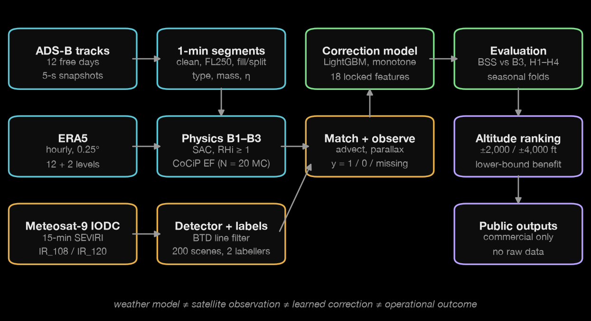
The primary label is a satellite-detectable contrail matched to a SAC-forming candidate segment during an observable opportunity. It is not a census of physical contrails. The prediction estimand concerns eligible, observable cases; any efficiency-adjusted estimate of physical incidence is secondary and requires a locally validated observation model.
| ID | Statistic | Supported if (locked) | Interpretation limit |
|---|---|---|---|
| H1 | Ratio of B1-predicted persistence to observed detectable occurrence on the same observable candidate set (Eq. 12). Raw detectable events primary; efficiency-adjusted secondary. | Upper bound of the 95 % CI < 1 | A ratio below 1 means under-prediction relative to an observed minimum, not an estimate of all physical contrails. Efficiency thresholds open (⚑ Q4). |
| H2 | Mean held-out-season Brier skill score of STRATUM versus B3 on the common target y (Eq. 11). Primary endpoint. | Mean BSS ≥ 0.10 and lower 95 % CI > 0 | Confirmatory only if every forecast targets the same y with the locked calibration procedure (Section 7.3). 0.10 is a project threshold, not a WMO standard. |
| H3 | Smallest share of eligible cruise distance that carries 80 % of positive modelled EF (Eq. 13). | Share ≤ 0.10 | EF is modelled and corridor/sample-specific; not an observed climate benefit. |
| H4 | Night-time share of positive EF minus night-time share of cruise distance; night = 18:00–06:00 local solar time (Eq. 13). | Lower 95 % CI > 0 | Describes the sampled, modelled EF; does not imply every night diversion is beneficial. |
At least 300 matched observed contrails in observable scenes are required before H1 and H2 are interpreted. A design-specific power/precision simulation is run before full labelling (Section 7.5). Below 300, H1/H2 are reported as underpowered or inconclusive. Additional scenes may be labelled only before outcomes are examined, under a logged decision; no threshold is relaxed after outcomes are seen.
Evaluation dates are 1 March 2025 to 28 February 2026 inclusive, in four seasonal folds: pre-monsoon (Mar–May), monsoon (Jun–Sep), post-monsoon (Oct–Nov) and winter (Dec–Feb). January 2026 is the development month; because it lies inside the winter fold, winter is reported both with and without January (settled before the lock). The study domain is 6–37°N, 68–98°E; ERA5 and satellite data use a 2° padded box (4–39°N, 66–100°E) so that contrails can drift. The development corridor is a polygon 75 km either side of the great circle Delhi (VIDP)–Mumbai (VABB) (Figure 2). A flight belongs to the corridor sample when at least one cruise-segment midpoint lies inside the polygon; the whole flight is then kept, because CoCiP needs complete trajectories. Such flights are described as flights through the Delhi–Mumbai corridor, not Delhi–Mumbai flights, and a route/direction filter is kept for DEL↔BOM-only displays.
The lock fixes the domain and a train-west/test-east split at 80°E, but did not state in words whether H1–H4 are scored on the full domain or on the corridor. The team settled this on 15 October 2026, before any outcome exists: H1–H4 are scored on the full study domain (all of India and its surroundings, 6–37°N, 68–98°E, at or above FL250), and the Delhi–Mumbai corridor is the development and demonstration area. The corridor lies entirely west of 80°E and is unlikely to reach 300 matched contrails from twelve flight days, so it could not carry the confirmatory tests alone. This is a clarification of an unstated point, not a change to a locked value, and is recorded in the project decision log.
| Source | Role and resolution | Status (15 Oct 2026) | Controls and limitations |
|---|---|---|---|
| ERA5 pressure and single levels [13,14,32,40] | T, q, u, v, ω, cloud ice, cloud fraction, geopotential on 12 levels (100–500 hPa); T at 50/70 hPa; top-of-atmosphere net solar/thermal radiation. Hourly, 0.25°. | Full evaluation year acquired (36/36 month-blocks). Jan 2026 via CDS; other months via ARCO-ERA5; one-day route comparison: worst relative difference 2.2 × 10⁻⁴ (GRIB packing). | Reanalysis, not in-situ humidity; 25–50 hPa spacing smooths thin ice-supersaturated layers. All twelve months were more than three months old when downloaded (October 2026), so all are final ERA5, not preliminary ERA5T. |
| Meteosat-9 IODC SEVIRI L1.5 [16,17] | 15-min imagery from 45.5°E; IR_108, IR_120 primary. Collection EO:EUM:DAT:MSG:HRSEVIRI-IODC. | All 12 months present in the archive (MSG2). 14 sample days acquired (12 first-of-month + 13/14 Jan 2026): 1,451/1,456 slots; 5 failed after 3 retries. | Best-effort service, no in-flight backup; pixels enlarge off-nadir; parallax correction mandatory. |
| IODC cloud mask [18,44] | Scene/obscuration context. Collection EO:EUM:DAT:MSG:CLM-IODC. | Acquired with the imagery on the same grid. | Categories: clear water, clear land, cloud, no data — no “opaque” class (⚑ Q11). |
| ADS-B Exchange [19] | readsb-hist global snapshots every 5 s; free first day of each month. | 12/12 days acquired, filtered to the padded box and ≥ FL200; ≈ 3.4–3.6 M reports and 2,000–2,165 aircraft per day; 0 missing snapshots. | Not a continuous year; twelve days must not be extrapolated to daily coverage. Provider’s free first-of-month sample, offered for testing and evaluation; raw data are not redistributed. |
| OpenSky [15,35] | Historical state vectors (if granted); aircraft database (ICAO24 → type). | Historical access pending. Aircraft database snapshot 2025-08 stored (616,648 rows, SHA-256 recorded). | Registration is not authorisation; database is incomplete and stale, so type fallbacks are logged. |
| OpenAP [21]; pycontrails [22,41] | Aircraft properties, fuel flow, drag; CoCiP, humidity scalings, emissions. | OpenAP 2.6.2 and pycontrails 0.64.0 pinned. | Model estimates, not flight-recorder data. |
The source rule is locked: use OpenSky for all months if it captures ≥ 50 % of scheduled corridor flights with continuous cruise tracks (no gap > 10 min); otherwise use the twelve ADS-B Exchange days and say so in every result. The team decided on 14 October that if OpenSky access is never granted, OpenSky coverage counts as 0 % and ADS-B Exchange is used; no paid flight data will be bought.
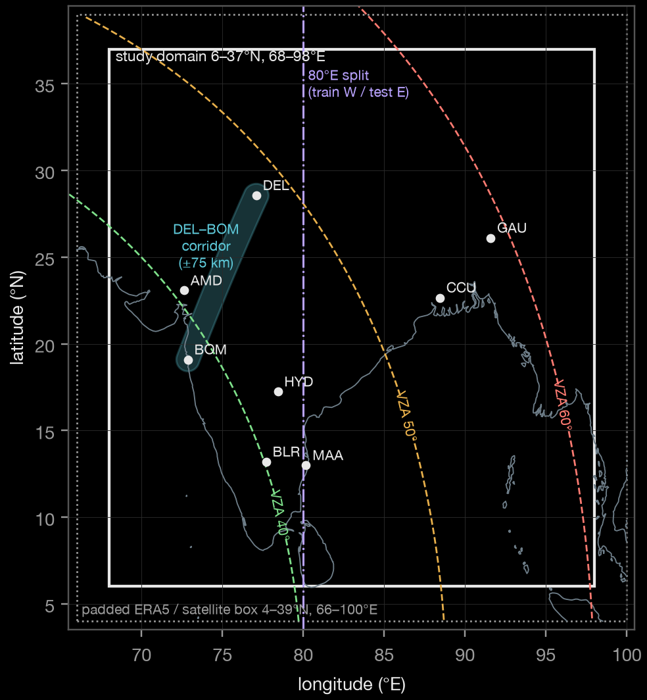
Coverage-audit design. Audit days are 1–7 November 2026. The denominator is the set of scheduled Delhi–Mumbai flights read manually from publicly visible timetable pages on 2 and 5 November and cross-checked against airline websites (no paid flight-status API [23], no automated scraping); the numerator is ADS-B Exchange on 1 November 2026 (plus OpenSky if granted), matched by airline and flight number with an airline–direction–time-window fallback. Because the audit measures coverage in November 2026, its transfer to the 2025–26 evaluation year is an assumption, stated as a limitation.
The protocol was locked at 16:11 UTC on 13 October 2026; the first study data were downloaded on 14 October; all inputs in Figure 3 were complete by 09:14 UTC on 15 October. Software checks used only the development month: ERA5 sanity maps (Figure 5), one CoCiP end-to-end run, satellite geolocation checks (Figure 7) and the traffic-density map in Figure 4. These are acquisition and quality-control facts; no label, detection, match, model score or hypothesis outcome was produced or examined.
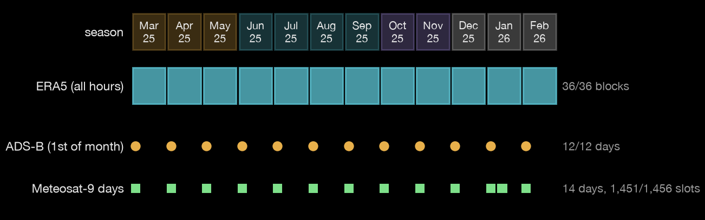
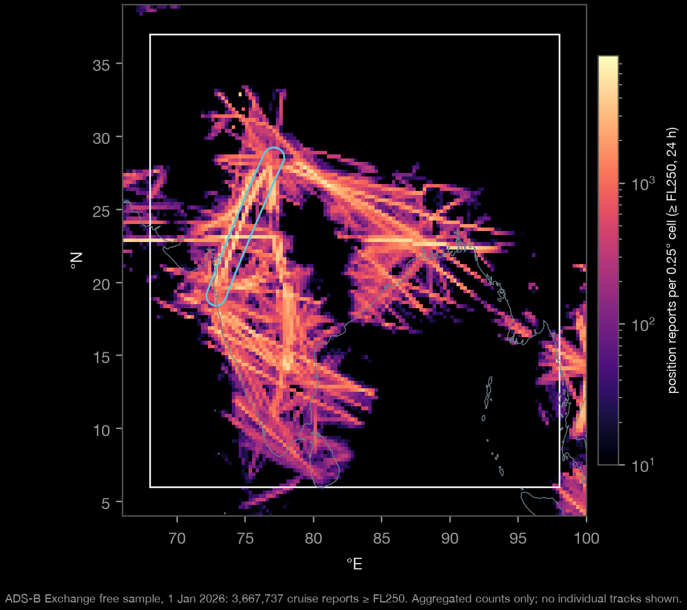
Raw inputs are immutable. Each processing unit (a day or a month) is written completely, then receives a manifest (code commit, configuration hash, parameters, input and output SHA-256, software versions, counts and warnings) and finally a _SUCCESS marker; a unit without the marker counts as not done, and a heartbeat lock prevents two runs writing the same unit. All times are stored in UTC; IST (UTC+05:30) and local solar time (UTC + longitude/15 h) are derived fields. Calculations use SI units internally.
Callsign flicker. ADS-B Exchange merges many receivers, and some aircraft alternate between two callsigns every few seconds (observed: ETH606 ↔ ETH873, KQA204 ↔ KQA205). A literal reading of step 2 fragmented flights; a change now counts only when the old callsign never reappears within the track before the next > 30-min gap. On 1 March 2025, 00–12 UTC, this changed 8,713 “flights” to 4,628 and fragments shorter than 5 min from 3,469 to 411. Gap definition. Any interval between reports longer than one resample step (60 s) is a gap for step 6. Position jumps. An interval whose distance exceeds what 750 kt could cover plus 3 km of position noise is a position jump: it is never filled and the flight is split there. Spike attribution. In step 3, a report with both adjacent transitions out of limits is a spike; a lone bad transition removes whichever end lies further from the 9-report running median. Pairs < 2 s apart are not rate-checked (altitude is quantised to 25 ft). None of these changes a locked threshold; each is logged in the project decision record.
Aircraft type comes from the OpenSky aircraft database snapshot (ICAO24 → ICAO designator); where the snapshot has no type, the ADS-B Exchange type field is used and logged, and the database wins any disagreement (logged). The designator is mapped to OpenAP directly, through OpenAP’s own synonym table, or through a hand-checked type map; unmapped types are flagged, never guessed. Aircraft mass is 0.80 × MTOW (sensitivity 0.70 and 0.90). Fuel flow comes from OpenAP; overall propulsion efficiency is derived per segment (Eq. 1) — the pre-registered OpenAP-based η, default 0.30 where no type is known, sensitivity 0.25–0.40 — and clipped to 0.20–0.45 with a flag. The engine count is taken from OpenAP, and pycontrails’ emissions model looks up the nvPM number emission index from the ICAO engine databank by aircraft type; where no engine is found it uses its constant default (10¹⁵ kg⁻¹) and the flight is counted.
(1)ERA5 is interpolated to each segment midpoint linearly in time, bilinearly in latitude/longitude and linearly in log-pressure between the two bracketing levels; points outside the grid in time, space or pressure are counted and left missing, never extrapolated. The segment pressure is the ISA pressure of its barometric altitude (Eq. 3; FL250 → 376.0 hPa, FL340 → 250.0 hPa). Each segment also receives T, q, u, v and geopotential on the native levels immediately above and below it, from which the vertical RHi gradient and vertical wind shear per kilometre are computed; high-cloud fraction is the maximum over the segment and every level above it. True airspeed is the ground velocity of the segment minus the ERA5 wind (a quality flag marks values outside 100–320 m s⁻¹). CoCiP itself uses pycontrails’ internal interpolation, which is not modified.
(2)
(3)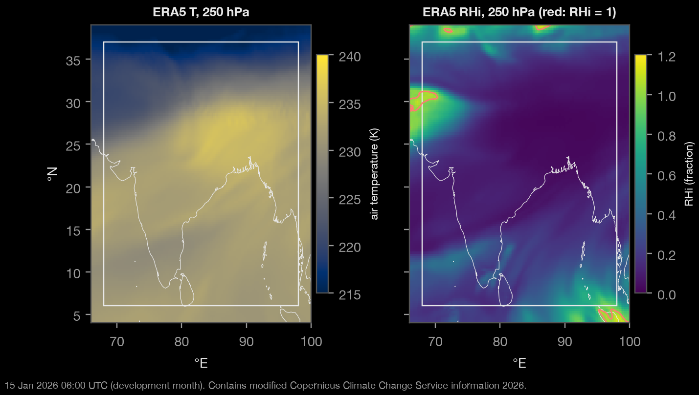
The WMO lapse-rate tropopause [27] is computed for every grid cell and hour from the 14-level temperature profile (500–50 hPa): the lowest level at which the lapse rate falls to ≤ 2 K km⁻¹, provided the average lapse rate from that level to every point within the next 2 km stays ≤ 2 K km⁻¹. Heights follow from the hypsometric equation; the reported height is the interpolated crossing of 2 K km⁻¹ between half-levels (as in Reichler et al. [27]) and its absolute value is anchored to ERA5 geopotential at 500 hPa. On synthetic profiles sampled on the ERA5 levels the method recovers a tropical tropopause within 0.3 km and 6 % in pressure, and rejects a 1-km stable slab below the true tropopause. The feature is the signed segment-height minus tropopause-height distance.
Saturation vapour pressures follow Murphy and Koop [11] (Eqs. 4–5; T in K, e in Pa). The mixing-line slope and threshold temperatures follow Eqs. 6–7, with the locked constants EIH₂O = 1.23 kg kg⁻¹, cp = 1004 J kg⁻¹ K⁻¹, ε = 0.622 and Q = 43.2 × 10⁶ J kg⁻¹. Formation and the raw persistence flag follow Eq. 8. At 250 hPa and η = 0.30, G = 1.6414 Pa K⁻¹ and TLM = −41.913 °C (Figure 6, Appendix A). The implementation is vectorised (10⁷ segments without Python loops) and agreed with pycontrails’ SAC at 59/59 test waypoints. pycontrails uses Sonntag [45] for ice saturation; the difference from Murphy–Koop is ≤ 0.16 % over the relevant range, and the locked Murphy–Koop formula is retained.
(4)
(6)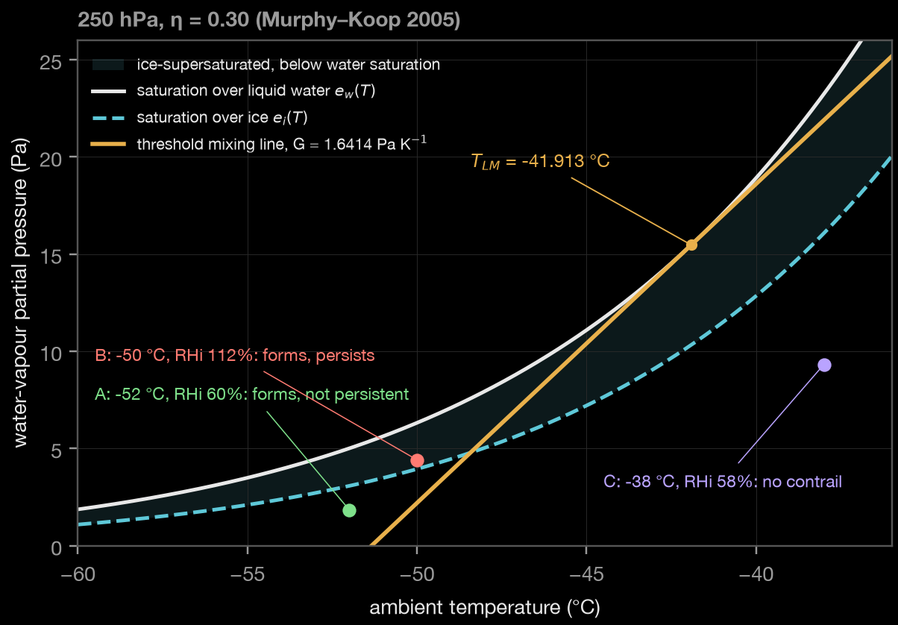
CoCiP runs on whole trajectories through pycontrails 0.64.0, carrying each waypoint’s fuel flow, η, mass, wingspan, engine count and aircraft type, with a maximum contrail age of 24 h. Per segment it stores formation, initial persistence, contrail age, width, ice water content, shortwave/longwave/net RF and EF, plus the contrail evolution table used later to check advection. Uncertainty comes from N = 100 Monte Carlo members (open question 12, settled at N = 20 and raised to 100 by logged deviation D-001 on 15 October 2026, after the N = 20 vs 40 check on the development day moved the summed 5th-percentile EF by 28 %; convergence is re-checked at N = 100 vs 200) drawn from pycontrails’ CoCiP uncertainty parameters (wake-vortex depth, sedimentation, nvPM factor, radiative factors, ice habits) — never from the humidity scaling under test; each segment keeps the central EF and its 5th/50th/95th percentiles. A convergence check (N = 20 versus 40 on one corridor day) is reported; a larger N would be adopted only through the deviation log and before any evaluation run.
| ID | Locked definition | Implementation and verified behaviour |
|---|---|---|
| B0 | Monthly cell-level climatology of the target from training months only | Estimated inside each outer training fold. |
| B1 | Raw ERA5: SAC formation and RHi ≥ 1, no humidity scaling | ConstantHumidityScaling(rhi_adj = 1.0); RHi equals Eq. 2 to within the Sonntag/Murphy–Koop difference. |
| B2 | Constant scaling: RHi divided by 0.95 | rhi_adj = 0.95; verified to raise RHi by exactly 1/0.95 (+5.26 %). |
| B3 | pycontrails latitude-dependent correction (Teoh et al.) | ExponentialBoostLatitudeCorrectionHumidityScaling; verified to change sub-saturated RHi by ≤ 3 % at 10–37°N and to boost supersaturated RHi strongly (1.12 → 1.16–1.33). |
| B4 | Optional Wolf et al. bivariate quantile mapping [3] | Run only if published coefficients and input definitions apply without test-fold fitting; otherwise reported as not run, with the reason. |
Native SEVIRI Level 1.5 files are read with satpy 0.60.0 [42], calibrated to brightness temperature and cropped on the native geostationary grid without reprojection, so thin lines are not smeared (IODC files are stored rotated by 180°; figures are turned north-up, data are not). Geolocation was verified by overlaying the Natural Earth coastline on IR_108 on a clear night (Figure 7). The primary detector normalises BTD = T10.8 − T12.0 against a local background, applies a bank of oriented line filters, keeps elongated objects of at least 10 px and scores each with a confidence; its threshold is tuned only on the tuning half of the labelled set.
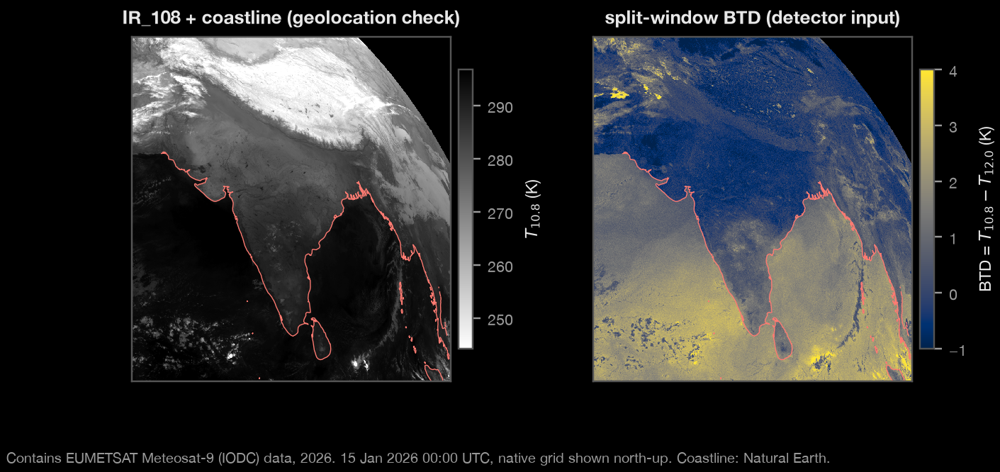
The human-labelled set comprises 200 scenes of 256 × 256 px, sampled across month, time of day and predicted contrail density, after a separate 20-scene pilot. Each scene is labelled independently by two team members, blind to flight tracks, model predictions and detector output; disagreements are settled by discussion and documented. The scenes are split 100 tuning / 100 held-out, stratified by the same variables (seed ⚑ Q16, owner SV, before sampling). The agreement metric is open (⚑ Q3, owner IK, before the pilot); “object-level Cohen’s κ” needs a defined set of true negatives, so the candidate is κ on a fixed cell grid alongside object-level precision, recall and F1. The scoring rules are locked:
Every SAC-forming segment — independent of any persistence prediction — is advected with ERA5 winds at its pressure level to each Meteosat slot 20–120 min after passage (Eq. 9, second-order Heun scheme, time steps ≤ 5 min). The advected line is then projected along the satellite line of sight from 45.5°E at the segment altitude, so that it is compared with the image where a high cloud actually appears. A match requires a detected object within 2 pixels and 20° of the projected segment. Without the projection, the displacement of a contrail at about 11 km (≈ 9 km at Mumbai to ≈ 18 km at Guwahati; Eq. 10, Figure 8) would exceed the tolerance almost everywhere; the projection is geometry, not a change of tolerance. The ground distance equivalent of 2 px is recorded because native pixels enlarge with viewing angle.
A slot is observable only if all hold: ERA5 high-cloud fraction at and above the segment level < 0.5; no opaque cloud in the matching window; VZA < 60°; and valid satellite data covering the projected line. Because the IODC cloud mask has only clear-water, clear-land, cloud and no-data categories, how “opaque” is operationalised is the open question ⚑ Q11 (owner IK, before Phase 5 matching); candidate readings are (a) treat “cloud” as opaque, (b) define opacity from brightness-temperature thresholds, or (c) rely on ERA5 cloud fields. The generic cloud class is not relabelled as opaque without team approval. The locked aggregation turns per-slot matches into one label per segment (Figure 9); every slot’s image, distance, angle, cloud status, VZA and quality are retained for sensitivity analyses.
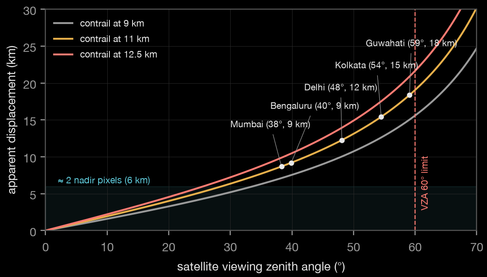
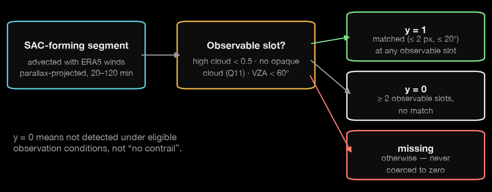
The model is gradient-boosted trees (LightGBM) trained only on SAC-forming segments with y ∈ {0, 1}. Monotone constraints make the prediction non-decreasing in segment RHi and non-increasing in T − TLM. Probabilities are calibrated with isotonic regression on a validation fold carved from the training seasons, and logistic regression on RHi alone is the sanity baseline. The eighteen features are fixed (Appendix D): RHi at the segment level and at the levels above and below, vertical RHi gradient, temperature, T − TLM, pressure, cloud ice water content, high-cloud fraction, vertical velocity, vertical wind shear, distance to the WMO tropopause, latitude, longitude, and the sine and cosine of month and of local solar time. No detector output, held-out label or CoCiP output computed with learned humidity is a predictor. The correction is fed back to CoCiP preferably as a season × latitude-band RHi scaling (6–15°, 15–25°, 25–37°N) unless direct probability ranking is clearly better on validation data; the choice is recorded before outer-test evaluation.
The primary evaluation is leave-one-season-out. Segments and images are grouped as connected components of the segment–image graph, so no flight or satellite image appears on both sides of a split; tuning, thresholds and calibration live only in validation data carved from training seasons. The secondary spatial test trains west of 80°E and tests east of it, assigning whole flight/image groups; it needs full-domain data. January 2026 was used only for software checks; the residual leakage risk is handled by reporting winter with and without January.
The primary metric is the BSS of STRATUM versus B3 on held-out seasons (Eq. 11). For a like-for-like comparison every baseline must forecast the same event y: B1–B4 are converted to probabilities by an isotonic map from each baseline’s score (corrected segment RHi where continuous, otherwise its binary persistence flag) to y, fitted only on the outer-training seasons with the same procedure; B0 comes from training-month frequencies. This specifies, and does not change, the locked comparison. Secondary metrics are hit rate, false-alarm ratio, critical success index, AUROC, Brier score and reliability diagrams [25].
(11)
(12)
(13)Twelve flight days give folds of 3 (pre-monsoon), 4 (monsoon), 2 (post-monsoon) and 3 (winter; 2 without January) days, and a day-cluster bootstrap inside a two-day fold would be meaningless. The locked whole-day bootstrap (1,000 resamples, 95 %) is therefore applied to the pooled held-out predictions of the four outer folds, resampling days stratified by season; each replicate computes the BSS within each season and then the mean across seasons. Seasons with fewer than three evaluation days are reported as descriptive only. Sensitivity analyses (age window, distance/angle tolerances, minimum observable slots, mass fraction, η) are run after the primary analysis and reported only as sensitivity.
Whether 300 matched positives can be reached depends on the number of SAC-forming candidates Ncand in the confirmed scope, the fraction fobs with at least two observable slots and the positive fraction p+ among them (Eq. 14). These are estimated from pre-outcome counts and stated assumptions in a low/central/high grid for corridor and full-domain scopes before labelling (to be filled in during Phase 3, before Phase 5); a scenario below 300 is a warning, not a reason to change the lock.
(14)For each flagged segment the locked alternatives are −4,000, −2,000, +2,000 and +4,000 ft, subject to aircraft limits and the FL250 floor. Each alternative re-runs SAC, the selected humidity treatment and CoCiP over the affected route portion, allowing the aircraft to enter a different supersaturated layer. Extra fuel comes from OpenAP including a climb/descent approximation; direct combustion CO₂ uses 3.16 kg CO₂ per kg of Jet-A/Jet-A1 [28]. Contrail EF (J) and CO₂ mass cannot be subtracted without a cited climate metric: the conversion source and factors for the 20- and 100-year horizons are open (⚑ Q5, owner SV, before Phase 7). Until then EF and fuel/CO₂ are reported side by side and no net-warming number is published. Once a metric is approved, candidates are ranked by the lower bound of net benefit (Eq. 15) across humidity, detection, aircraft-performance and metric uncertainty, and an alert is eligible only if that lower bound is positive under both horizons. A per-segment card reports the flight, time (UTC and IST), planned level, calibrated probability, EF range (5th–95th percentile), best alternative, extra fuel and CO₂ and a confidence note; the note says “well covered” only if at least 50 labelled examples exist in the segment’s (season, latitude band, FL band, VZA band, day/night) cell, and “extrapolating” otherwise. ATC clearance, conflicts, capacity and dispatch practice are outside scope.
ADS-B broadcasts identify aircraft. Public products show commercial airline flights only: a flight qualifies if its callsign matches ^[A-Z]{3}\d{1,4}[A-Z]{0,2}$, its three-letter prefix is on a reviewed airline allowlist (built from all 191 airline-style prefixes seen on 1 January 2026 and checked against operator names in the OpenSky aircraft database: 160 airlines listed, 13 VIP, government, business-jet or helicopter operators excluded, 18 unconfirmed codes hidden until verified), and its type is a transport-category type (modelled by OpenAP and not a business jet). Private, state, military and unidentified tracks are never exported; public flight identifiers are salted hashes. India’s ICAO24 block (0x800000–0x83FFFF) is used only to report the share of Indian-registered aircraft. Raw ERA5, EUMETSAT and ADS-B files are not presumed redistributable; releases contain code, manifests, derived labels and predictions and re-download instructions where upstream terms allow [15,19,26,31,32]. Every public output states that results are computational, that no real flight was changed, that ATC feasibility is not modelled and what the flight-data coverage is.
The code is a single pinned Python 3.12 package (dependency lock file; pycontrails 0.64.0, satpy 0.60.0, OpenAP 2.6.2) with thin Colab launcher notebooks; no pipeline logic lives in notebooks. Every change passes linting, strict type checking and the test suite in continuous integration, and stratum verify-lock compares the pre-registration file and settled answers against the lock on every run; a run cannot be called final unless the lock verifies or the deviation log records an approved change. As of 15 October 2026 the suite contains 124 tests, including the thermodynamic known answers (Appendix A), exact interpolation on analytic fields, synthetic trajectories with injected spikes, 5- and 15-minute gaps, a ground point, a callsign change and a position jump, tropopause profiles with known answers, and humidity-scaling direction checks. The Phase 2 pipeline (segments, ERA5 features, η, SAC flags and CoCiP for B1–B3 with Monte Carlo ranges, plus the required sanity report) is implemented; its first development-month run is pending.
| # | Planned order of work | Gate |
|---|---|---|
| 1 | Lock the analysis plan; acquire and audit data; reproduce SAC and CoCiP on known examples | Done (Phases 0–1), except the November coverage audit |
| 2 | Physics baseline B1–B3 for the development month; sanity report reviewed by the team | Phase 2 |
| 3 | Detector and overlays on clear January days | Phase 3 |
| 4 | Pilot labels, frozen guide, 200 scenes, segment labels with parallax and observability; ≥ 300 check | Phase 5; Q3, Q4, Q11, Q16 settled first |
| 5 | One locked outer seasonal evaluation of B0–B4 and STRATUM; all final-run logs preserved | Phases 6–7 |
| 6 | Counterfactual ranking only after a cited climate metric is approved | Phase 7; Q5 settled first |
| Outcome | Meaning | Next step |
|---|---|---|
| H1 and H2 supported | Raw ERA5 flags fewer events than the satellite-detected minimum, and the local correction improves observation-conditioned skill. | Further validation; recompute EF with the correction and report it with uncertainty. Not by itself evidence of total Indian contrail prevalence or realised mitigation. |
| H1 supported, H2 not | Under-prediction relative to detections is visible, but the features do not correct it on held-out seasons. | Publish the comparison and its limits without tuning on test seasons; look for better humidity information on Indian routes. |
| H1 not supported | No under-count relative to detections is shown. This does not prove ERA5 unbiased, because the satellite misses events. | Examine observability and uncertainty; focus on H3/H4 to find the few flights and night routes where avoidance still matters. |
| H2 not supported or negative | The model is not demonstrably better than B3 under the locked criterion. | Retain B3 as the reference and report the result; never change the threshold after the fact. |
| Fewer than 300 matched positives, or unresolved coverage/licence/observability definitions | The confirmatory analysis is not run, or is reported as inconclusive. | The remedy is more valid data (more scenes before outcomes are seen, a second satellite), never a weaker label or an unreported substitution. |
Version 1.0 (12 October 2026) is the methods paper on which the analysis plan was locked on 13 October. A companion comprehensive edition (v2.0, 15 October) consolidates the project synopsis, phase plan and Lean Canvas with a claim ledger. A protocol rewrite of 15 October (v1.1) was reviewed by the authors against the lock; this version 1.2 corrects the remaining inconsistencies with it (open-question status, the confidence-note rule, an unrendered equation), corrects two reference author lists, adds the Phase-1 acquisition record and figures from the team’s own data, and records the implementation clarifications of Section 5.2. No locked value changed (Appendix E). Every DOI in the reference list was resolved on 15 October 2026 and its title, authors, journal, volume and pages compared with the citation; physical constants and known answers were recomputed from the printed equations; dataset facts were checked against the providers’ documentation and the team’s own download manifests. Items that cannot be verified now — coverage percentages, agreement statistics, detections, scores and benefits — are future results and are not quoted anywhere in this document.
Data availability. No labels, detections, matches, model scores or hypothesis results exist at this stage. Phase-1 inputs are held by the team and are not redistributed with this manuscript: ERA5 and Copernicus-derived information are used under the Copernicus licence (“Contains modified Copernicus Climate Change Service information 2026”; neither the European Commission nor ECMWF is responsible for any use of this information); EUMETSAT Meteosat-9 data are used under the applicable EUMETSAT data policy with credit to EUMETSAT [26,31]; flight data are ADS-B Exchange first-of-month samples, which the provider makes available free of charge for testing and evaluation, and are credited to ADS-B Exchange; aircraft metadata are from the OpenSky Network aircraft database. Both remain subject to their providers’ terms. Derived outputs and re-download instructions will be released where upstream terms and the privacy rules of Section 9 permit.
Code availability. The analysis code, configuration, pre-registration lock and tests are held in a version-controlled repository; the repository is private while the study runs and is available to judges and reviewers on request; a public release with an archive DOI will follow at the end of the project.
Author contributions (CRediT). S.V.: conceptualisation, methodology, software, formal analysis, writing — original draft. A.H.: data curation (flight data), software, investigation, validation. I.K.: data curation (satellite), investigation, methodology (detection and labelling), validation. A.S.: visualisation, project administration, communication. V.P.: supervision, scientific review, writing — review and editing.
Use of AI tools. The authors used AI assistants (Anthropic Claude) to find and summarise literature, explain physics, check calculations, write and test analysis code, generate figures from the team’s data and draft and cross-check this manuscript. All references were opened and checked, every pre-registered value and design decision was made and approved by the authors, and no AI-generated labels, observations, scores or results are reported.
Acknowledgements. We thank our supervisor Dr. Varsha Pant. ERA5 is provided by the Copernicus Climate Change Service and ECMWF; Meteosat-9 data by EUMETSAT; flight data by ADS-B Exchange; aircraft metadata by the OpenSky Network; and open-source software by the pycontrails, OpenAP, satpy and Natural Earth communities. No funding was received for this work.
Competing interests. The authors declare no competing interests.
Ethics. The study involves no human participants beyond the authors, who are the labellers. ADS-B data are handled under Section 9.
| Check | Input | Recomputed value | Use |
|---|---|---|---|
| Mixing-line slope | p = 250 hPa, η = 0.30, locked constants | G = 1.64137 Pa K⁻¹ | SAC unit test |
| Threshold temperature | same; Murphy–Koop liquid water, Brent root | T_LM = 231.237 K = −41.913 °C | SAC unit test |
| Point A | T = −52 °C, RHi = 0.60 | RHw 0.368, T_LC −49.90 °C | forms, not persistent |
| Point B | T = −50 °C, RHi = 1.12 | RHw 0.698, T_LC −47.93 °C | forms and persists |
| Point C | T = −38 °C, RHi = 0.58 | RHw 0.401, T_LC −49.75 °C | does not form |
| Monotonicity | η 0.28 → 0.32 | G and T_LM increase | newer engines form contrails at warmer T |
| Limit | RHw = 1 | T_LC = T_LM exactly | boundary test |
| ISA | FL250, FL340 | 376.0 hPa, 250.0 hPa | flight-level conversion |
| Calendar | 1 Mar 2025 – 28 Feb 2026 | 365 d, 8,760 h, 35,040 nominal slots | denominators only, not completeness |
| ID | Question | Owner / deadline | Status and recommended disposition |
|---|---|---|---|
| Q3 | Label-agreement metric | IK · before pilot | Open. Recommend κ on a fixed cell grid plus object-level precision/recall/F1 with one-to-one matching and scene-bootstrap intervals. |
| Q4 | Detection-efficiency thresholds (Driver et al.) | IK · before Phase 5 | Open. Take thresholds from the paper itself; use only for the secondary, efficiency-adjusted H1. |
| Q5 | EF → CO₂-equivalent factors (20/100 yr) | SV · before Phase 7 | Open. No net-benefit number until a cited method, sign convention, units and uncertainty are approved. |
| Q11 | Which cloud-mask classes count as opaque | IK · before matching | Open. IODC CLM has no opaque class; options (a)–(c) in Section 6.3. |
| Q12 | CoCiP Monte Carlo size | SV | Settled 15 Oct 2026: N = 100 (N = 20 amended by deviation D-001), with the N = 100 vs 200 convergence check reported. |
| Q16 | Seed for the 100/100 scene split | SV · before sampling | Open. Record before any scene is sampled. |
| Scope | Full domain vs corridor for confirmatory H1–H4 | Settled 15 Oct 2026 | Full domain; corridor for development and demonstration (Section 4.1). |
| Claim as used | Source checked | Disposition |
|---|---|---|
| 2018 aviation ERF +100.9 mW m⁻²; contrail cirrus 57.4; CO₂ 34.3 | Lee et al. 2021 [1] | Verified; ERF, not RF |
| 2019 contrail RF 62.1 (34.8–74.8) mW m⁻²; 14 % net-warming flights; 2 % → 80 % of EF; India + China 19 % distance, 6 % EF; humidity correction most influential | Teoh et al. 2024 [2] | Verified; global and regional (India + China) statistics |
| ERA5 RHi bias up to −5.5 pp at 250 hPa; 7.9 % vs 12.1 % persistence flags | Wolf et al. 2025 [3] | Verified; North Atlantic, not India |
| 2 km imager: 46 ± 2 % of segments observable; 72 ± 2 % of LW forcing | Driver et al. 2025 [5] | Verified; idealised, not an India efficiency |
| Randomised trial: 64 % fewer contrails, p = 0.0331, ~2 % fuel | Sonabend-W et al. 2024 [12] | Verified; US trial, not STRATUM evidence |
| Japan: ±2,000 ft on 1.7 % of flights cuts EF up to 59 % | Teoh et al. 2020 [30] | Verified |
| Night ≈ 25 % of traffic, 60–80 % of contrail forcing | Stuber et al. 2006 [47] | Verified; south-east England site |
| India third-largest domestic market; fleet 395 → 844 | News on AIR 2025 [37] | Verified against the cited report |
| Operator trials (54 %, 62 %) | Google [38,39] | Operator-reported, not peer-reviewed |
| ESSD MSG/SEVIRI labelled dataset authorship | DOI record [24] | Santos Gabriel, Bugliaro, Montag et al. (not “Voigt et al.”) |
| Teoh et al. 2022 authorship | DOI record [33] | Teoh, Schumann, Gryspeerdt et al. (corrected in v1.2) |
| “No India validation study exists” | Targeted search | Not stated as fact; provisional gap |
| # | Feature (configuration name) | Unit | Source / derivation |
|---|---|---|---|
| 1 | rhi_at_level | fraction | ERA5 q, T at segment p (log-p), Murphy–Koop ice; monotone increasing |
| 2–3 | rhi_level_above / rhi_level_below | fraction | Same on the native levels bracketing the segment |
| 4 | rhi_vertical_gradient | km⁻¹ | (RHi above − RHi below) / geopotential-height difference |
| 5 | temperature | K | ERA5 at segment p |
| 6 | temp_minus_TLM | K | T − TLM with the segment’s η; monotone decreasing |
| 7 | pressure | Pa | ISA pressure of barometric altitude |
| 8 | cloud_ice_water_content | kg kg⁻¹ | ERA5 specific cloud ice water content |
| 9 | high_cloud_fraction | 0–1 | Maximum ERA5 cloud fraction at and above the segment |
| 10 | vertical_velocity | Pa s⁻¹ | ERA5 ω |
| 11 | vertical_wind_shear | m s⁻¹ km⁻¹ | Wind-vector difference between bracketing levels per km |
| 12 | distance_to_tropopause_wmo | m | Segment geopotential height − WMO tropopause height (signed) |
| 13–14 | latitude / longitude | degrees | Segment midpoint; spatial split uses whole groups |
| 15–16 | month_sin / month_cos | — | Cyclic month |
| 17–18 | local_solar_time_sin / _cos | — | UTC + longitude/15 h, cyclic |
| Locked item | Locked value | Section |
|---|---|---|
| Domain, cruise floor, corridor | 6–37°N, 68–98°E; FL250; DEL–BOM | 4.1 |
| Periods, folds, January rule | Mar 2025–Feb 2026; 4 seasons; winter with and without Jan 2026 | 4.1, 7.2 |
| Spatial split | 80°E; train west, test east | 7.2 |
| Coverage rule | OpenSky if ≥ 50 % continuous (gap ≤ 10 min), else ADS-B Exchange days | 4.2 |
| Trajectory thresholds | 6,000 ft/min; 100 kt; 1 min; fill ≤ 10 min at constant altitude | 5.2 |
| Aircraft | 0.80 MTOW (0.70/0.90); η OpenAP, 0.30 default (0.25–0.40) | 5.3 |
| SAC constants, persistence, saturation | 1.23; 1004; 0.622; 43.2 MJ kg⁻¹; RHi ≥ 1; Murphy–Koop | 5.6 |
| Interpolation | linear time; bilinear; linear in log-p | 5.4 |
| Detection and labels | BTD; 200 × 256 px; 20 pilot; 2 labellers; discussion; 100/100; scoring rules | 6.1 |
| Matching | 20–120 min; 2 px; 20°; ERA5 winds; parallax; y rule with ≥ 2 slots | 6.2, 6.3 |
| Observability | high cloud < 0.5; no opaque cloud (⚑ Q11); VZA < 60°; unobservable = missing | 6.3 |
| Baselines | B0 climatology; B1 raw; B2 ÷ 0.95; B3 pycontrails latitude; B4 optional | 5.7 |
| Metrics, bootstrap | BSS vs B3 primary; secondary set; whole days, 1,000, 95 % | 7.3, 7.4 |
| Hypotheses, minimum labels | H1–H4 thresholds as in Section 3.2; 300 matched positives | 3.2, 3.3 |
| Model | LightGBM; 18 features; monotone RHi ↑, T − TLM ↓; isotonic; logistic sanity; lat bands | 7.1, App. D |
| Decision layer | ±2,000/±4,000 ft; OpenAP; 3.16; 20/100 yr; lower bound > 0 for all horizons; ≥ 50 examples | 8 |
| Open by design | Q3, Q4, Q5, Q11, Q16 (Q12 settled: N = 100, deviation D-001) | App. B |
[1] Lee, D. S., Fahey, D. W., Skowron, A., et al. (2021). The contribution of global aviation to anthropogenic climate forcing for 2000 to 2018. Atmospheric Environment, 244, 117834. doi:10.1016/j.atmosenv.2020.117834
[2] Teoh, R., Engberg, Z., Schumann, U., Voigt, C., Shapiro, M., Rohs, S., & Stettler, M. E. J. (2024). Global aviation contrail climate effects from 2019 to 2021. Atmos. Chem. Phys., 24, 6071–6093. doi:10.5194/acp-24-6071-2024
[3] Wolf, K., Bellouin, N., Boucher, O., Rohs, S., & Li, Y. (2025). Correction of ERA5 temperature and relative humidity biases by bivariate quantile mapping for contrail formation analysis. Atmos. Chem. Phys., 25, 157–181. doi:10.5194/acp-25-157-2025
[4] Antonopoulos, M., Juvin-Quarroz, J., & Boucher, O. (2026). Technical note: Hybrid machine learning model for bias correction of UTLS relative humidity against IAGOS observations in ERA5 reanalysis. Atmos. Chem. Phys., 26, 4771–4784. doi:10.5194/acp-26-4771-2026
[5] Driver, O. G. A., Stettler, M. E. J., & Gryspeerdt, E. (2025). Factors limiting contrail detection in satellite imagery. Atmos. Meas. Tech., 18, 1115–1134. doi:10.5194/amt-18-1115-2025
[6] Mannstein, H., Meyer, R., & Wendling, P. (1999). Operational detection of contrails from NOAA-AVHRR data. Int. J. Remote Sens., 20(8), 1641–1660. doi:10.1080/014311699212650
[7] Santos Gabriel, V., Bugliaro, L., Piontek, D., Ries, S., & Voigt, C. (2026). An adaptive segmentation approach for contrail detection in Meteosat Second Generation satellite imagery. Atmos. Meas. Tech., 19, 3271–3289. doi:10.5194/amt-19-3271-2026
[8] Gierens, K., Matthes, S., & Rohs, S. (2020). How well can persistent contrails be predicted? Aerospace, 7(12), 169. doi:10.3390/aerospace7120169
[9] Schumann, U. (2012). A contrail cirrus prediction model. Geosci. Model Dev., 5, 543–580. doi:10.5194/gmd-5-543-2012
[10] Schumann, U. (1996). Über Bedingungen zur Bildung von Kondensstreifen aus Flugzeugabgasen [On conditions for contrail formation from aircraft exhausts]. Meteorol. Z., 5, 4–23. doi:10.1127/metz/5/1996/4
[11] Murphy, D. M., & Koop, T. (2005). Review of the vapour pressures of ice and supercooled water for atmospheric applications. Q. J. R. Meteorol. Soc., 131, 1539–1565. doi:10.1256/qj.04.94
[12] Sonabend-W, A., Elkin, C., Dean, T., et al. (2024). Feasibility test of per-flight contrail avoidance in commercial aviation. Commun. Eng., 3, 184. doi:10.1038/s44172-024-00329-7
[13] Copernicus Climate Change Service (C3S). ERA5 hourly data on pressure levels from 1940 to present; dataset documentation and licence. cds.climate.copernicus.eu (accessed 15 Oct 2026).
[14] Hersbach, H., Bell, B., Berrisford, P., et al. (2020). The ERA5 global reanalysis. Q. J. R. Meteorol. Soc., 146, 1999–2049. doi:10.1002/qj.3803
[15] OpenSky Network. FAQ, historical-data access (Trino), aircraft database and terms. opensky-network.org (accessed 15 Oct 2026).
[16] EUMETSAT. Meteosat Second Generation services: Indian Ocean Data Coverage (IODC). eumetsat.int/msg-services (accessed 15 Oct 2026).
[17] EUMETSAT. MSG High Rate SEVIRI Level 1.5 data guide. user.eumetsat.int (accessed 15 Oct 2026).
[18] EUMETSAT Data Store. Cloud Mask — MSG — Indian Ocean, collection EO:EUM:DAT:MSG:CLM-IODC. data.eumetsat.int (accessed 15 Oct 2026).
[19] ADS-B Exchange. Sample data (readsb-hist, first day of each month). adsbexchange.com/data-products/sample-data (accessed 15 Oct 2026).
[20] Natural Earth. 1:50m physical vectors (coastline) and terms of use. naturalearthdata.com (accessed 15 Oct 2026).
[21] Sun, J., Hoekstra, J. M., & Ellerbroek, J. (2020). OpenAP: An open-source aircraft performance model for air transportation studies and simulations. Aerospace, 7(8), 104. doi:10.3390/aerospace7080104
[22] pycontrails contributors. Humidity scaling, CoCiP and emissions documentation, v0.64.0. py.contrails.org (accessed 15 Oct 2026).
[23] Cirium / FlightStats. Historical Flight Status API documentation and licensing. developer.flightstats.com (accessed 15 Oct 2026). Not used: premium service.
[24] Santos Gabriel, V., Bugliaro, L., Montag, M., Ries, S., Wang, Z., Widmaier, K., Arico, M., Unterstrasser, S., Mayer, J., Menekay, D., Marsing, A., de la Torre Castro, E., Megill, L., Scheibe, M., & Voigt, C. (2026). A manually labeled contrail dataset from MSG/SEVIRI. Earth Syst. Sci. Data, 18, 2397–2412. doi:10.5194/essd-18-2397-2026
[25] WMO WWRP/WGNE Joint Working Group on Forecast Verification Research. Forecast verification methods: Brier score, Brier skill score and reliability diagrams. wmo.int (accessed 15 Oct 2026).
[26] EUMETSAT. Data Policy (last amended 27 June 2024). eumetsat.int (accessed 15 Oct 2026).
[27] WMO (1957). Definition of the lapse-rate tropopause; Reichler, T., Dameris, M., & Sausen, R. (2003). Determining the tropopause height from gridded data. Geophys. Res. Lett., 30(20), 2042. doi:10.1029/2003GL018240
[28] ICAO. CORSIA FAQs, fuel conversion factors and Annex 16, Volume IV. icao.int (accessed 15 Oct 2026).
[29] Hofer, S., Gierens, K., & Rohs, S. (2024). How well can persistent contrails be predicted? An update. Atmos. Chem. Phys., 24, 7911–7925. doi:10.5194/acp-24-7911-2024
[30] Teoh, R., Schumann, U., Majumdar, A., & Stettler, M. E. J. (2020). Mitigating the climate forcing of aircraft contrails by small-scale diversions and technology adoption. Environ. Sci. Technol., 54(5), 2941–2950. doi:10.1021/acs.est.9b05608
[31] EUMETSAT. Getting started using data: registration and licensing guide. user.eumetsat.int (accessed 15 Oct 2026).
[32] Copernicus Climate Change Service. ERA5 documentation and data-access guidance. confluence.ecmwf.int (accessed 15 Oct 2026).
[33] Teoh, R., Schumann, U., Gryspeerdt, E., Shapiro, M., Molloy, J., Koudis, G., Voigt, C., & Stettler, M. E. J. (2022). Aviation contrail climate effects in the North Atlantic from 2016 to 2021. Atmos. Chem. Phys., 22, 10919–10935. doi:10.5194/acp-22-10919-2022
[34] Kärcher, B. (2018). Formation and radiative forcing of contrail cirrus. Nat. Commun., 9, 1824. doi:10.1038/s41467-018-04068-0
[35] Schäfer, M., Strohmeier, M., Lenders, V., Martinovic, I., & Wilhelm, M. (2014). Bringing up OpenSky: A large-scale ADS-B sensor network for research. Proc. IPSN ’14, 83–94. doi:10.1109/IPSN.2014.6846743
[36] Ng, J. Y.-H., McCloskey, K., Cui, J., et al. (2024). Contrail detection on GOES-16 ABI with the OpenContrails dataset. IEEE Trans. Geosci. Remote Sens., 62, 1–14. doi:10.1109/TGRS.2023.3345226
[37] News on AIR (20 Dec 2025). India emerges as world’s third-largest domestic aviation market. All India Radio, newsonair.gov.in (accessed 15 Oct 2026).
[38] Google Research. Project Contrails — testing with American Airlines. sites.research.google/gr/contrails (accessed 15 Oct 2026). Operator-reported.
[39] Google (19 Mar 2026). Google AI helps airplanes avoid contrails in new study. blog.google (accessed 15 Oct 2026). Operator-reported.
[40] Carver, R. W., & Merose, A. (2023). ARCO-ERA5: An analysis-ready cloud-optimized reanalysis dataset. 103rd AMS Annual Meeting, paper 4A.1. ⚑ citation record not independently verified.
[41] Shapiro, M., Engberg, Z., Teoh, R., Stettler, M., Dean, T., & Abbott, T. pycontrails: Python library for modeling aviation climate impacts, v0.64.0 [software]. Zenodo. doi:10.5281/zenodo.23065722
[42] Raspaud, M., Hoese, D., Lahtinen, P., et al. (2026). pytroll/satpy v0.60.0 [software]. Zenodo. doi:10.5281/zenodo.18864547
[43] OurAirports. Airports database: identifiers and coordinates. ourairports.com/data (accessed 15 Oct 2026).
[44] EUMETSAT. Cloud Mask (CLM) product guide. user.eumetsat.int (accessed 15 Oct 2026).
[45] Sonntag, D. (1994). Fortschritte in der Hygrometrie [Advancements in the field of hygrometry]. Meteorol. Z., 3, 51–66. doi:10.1127/metz/3/1994/51
[46] Platt, J. C., Shapiro, M. L., Engberg, Z., et al. (2024). The effect of uncertainty in humidity and model parameters on the prediction of contrail energy forcing. Environ. Res. Commun., 6(9), 095015. doi:10.1088/2515-7620/ad6ee5
[47] Stuber, N., Forster, P., Rädel, G., & Shine, K. P. (2006). The importance of the diurnal and annual cycle of air traffic for contrail radiative forcing. Nature, 441, 864–867. doi:10.1038/nature04877